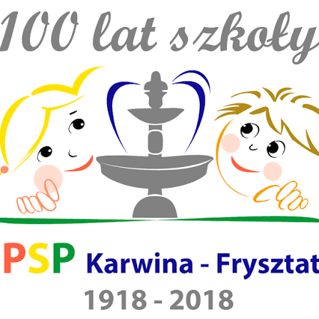
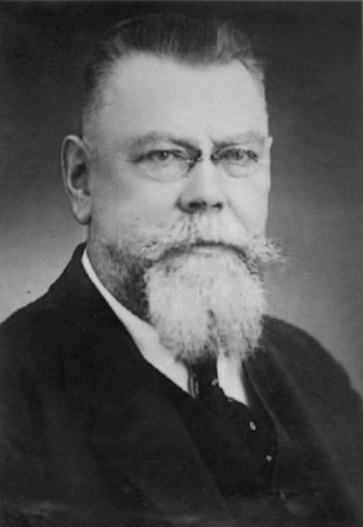
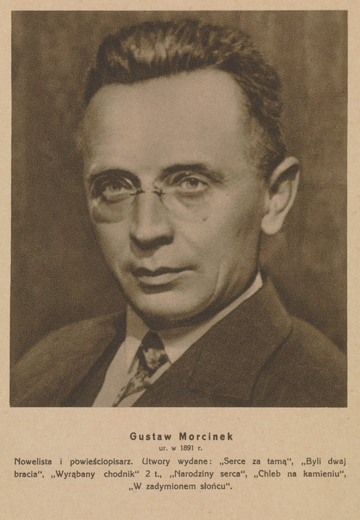

HistoriaHistorie
Od 1918 roku uczymy we Frysztacie po polsku. Tak wyglądał nasz budynek dawniej.
Od roku 1918 učíme ve Fryštátě polsky. Takhle vypadala naše budova dřív.

Sto lat szkołySto let školy
- ok. 1900
- Polscy obywatele Frysztatu myślą o własnej szkole. Pomaga Macierz Szkolna, mimo oporu niemieckich władz miasta.Polští obyvatelé Fryštátu usilují o vlastní školu. Pomáhá Macierz Szkolna, přes odpor německého vedení města.
- 1918
- Otwarcie Publicznej Polskiej Szkoły Wydziałowej we Frysztacie. Pierwszy dyrektor: Józef Mucha. Do 1922 roku lekcje w domu Macierzy przy ulicy Rajskiej 21.Otevřena Veřejná polská měšťanská škola ve Fryštátě. První ředitel: Józef Mucha. Do roku 1922 se učí v domě Macierz v ulici Rajská 21.
- 1922
- Dwie klasy przenoszą się do budynku na „Babiszowcu” przy sądzie.Dvě třídy se stěhují do budovy na „Babiszowci” u soudu.
- 1939–1945
- Okupacja niemiecka zamyka polskie szkoły na sześć lat.Německá okupace zavírá polské školy na šest let.
- 1945
- Zapisy 4. i 5. września: 137 uczniów. Dyrektorem zostaje Jerzy Rusnok.Zápis 4. a 5. září: 137 žáků. Ředitelem se stává Jerzy Rusnok.
- 1961
- Dziewięcioletnia Szkoła Podstawowa z Polskim Językiem Nauczania, 402 uczniów.Devítiletá základní škola s polským jazykem vyučovacím, 402 žáků.
- 2003
- Połączenie ze szkołą w Nowym Mieście i z przedszkolem we Frysztacie. Dyrektor mgr Jadwiga Palowska, 201 uczniów.Sloučení se školou v Novém Městě a se školkou ve Fryštátě. Ředitelka Mgr. Jadwiga Palowska, 201 žáků.
- 2018
- Sto lat szkoły.Sto let školy.
JubileuszVýročí

W 2018 roku szkoła obchodziła sto lat. Logo jubileuszu przedstawia fontannę z frysztackiego rynku i dwoje dzieci.
V roce 2018 slavila škola sto let. Logo výročí zobrazuje kašnu z fryštátského náměstí a dvě děti.
DyrektorzyŘeditelé
Polska Szkoła LudowaPolská obecná škola
- Józef Mucha
- Andrzej Kuczek
- Józef Wagner
- Henryk Rzehaczek
- Rafał Bajger
- Tasek-Zajicowa
- Franciszek Gałganek
- Jan Grohman
- Józef Mucha
- Andrzej Kuczek
- Józef Wagner
- Henryk Rzehaczek
- Rafał Bajger
- Tasek-Zajicowa
- Franciszek Gałganek
- Jan Grohman
Szkoła WydziałowaMěšťanská škola
- Józef Mucha
- Jan Chromik
- Alojzy Kocjan
- Karol Marosz
- Jerzy Rusnok
- Franciszek Chowaniec
- Józef Mucha
- Jan Chromik
- Alojzy Kocjan
- Karol Marosz
- Jerzy Rusnok
- Franciszek Chowaniec
Po roku 1968Po roce 1968
- Józef Kunz
- Franciszek Buzek
- Zbigniew Kocur
- Janina Fierla
- Jadwiga Palowska
- Tomasz Śmiłowski
- Józef Kunz
- Franciszek Buzek
- Zbigniew Kocur
- Janina Fierla
- Jadwiga Palowska
- Tomasz Śmiłowski
Dr. Wacław OlszakDr. Wacław Olszak
Szkoła stoi przy ulicy jego imienia. Urodził się 29 maja 1868 roku w Szonowie, uczył się w gimnazjum w Cieszynie i studiował medycynę w Wiedniu.
Škola stojí v ulici, která nese jeho jméno. Narodil se 29. května 1868 v Šenově, studoval gymnázium v Těšíně a medicínu ve Vídni.
Od 1896 roku pracował w Karwinie jako lekarz Kasy Brackiej – był pierwszym polskim lekarzem górniczym w mieście. Ludzie nazywali go „naszym lekarzem”, bo leczył wszystkich bez różnicy. Był prezesem Macierzy Szkolnej Księstwa Cieszyńskiego, współzałożycielem „Beskidu Śląskiego” i fundatorem stypendiów dla ubogich uczniów gimnazjum w Orłowej.
Od roku 1896 působil v Karviné jako lékař bratrské pokladny – byl prvním polským horním lékařem ve městě. Lidé mu říkali „náš lékař”, protože léčil všechny bez rozdílu. Byl předsedou Macierz Szkolna Těšínského knížectví, spoluzakladatelem spolku „Beskid Śląski” a zakladatelem stipendií pro chudé studenty gymnázia v Orlové.

Gustaw MorcinekGustaw Morcinek
Pisarz związany ze Śląskiem, nauczyciel i poseł. Urodził się 25 sierpnia 1891 roku w Karwinie na Żabkowie w ubogiej rodzinie, zmarł w 1963 roku w Krakowie.
Spisovatel spjatý se Slezskem, učitel a poslanec. Narodil se 25. srpna 1891 v Karviné na Žabkově v chudé rodině, zemřel v roce 1963 v Krakově.
Z okazji 130. rocznicy jego urodzin szkoła przygotowała projekt „Jak się żyło w Karwinie, której już nie ma”. Materiały po polsku i po czesku są w szkole: skola@pzskarvina.cz.
K 130. výročí jeho narození připravila škola projekt „Jak se žilo v Karviné, která již zanikla”. Materiály v polštině i češtině jsou ve škole: skola@pzskarvina.cz.
